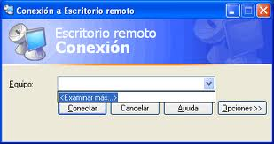
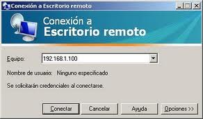

NOTA: Usar
alguno de los siguientes SSOO: Windows 7, Windows 2008 Server o
GNU/Linux Debian. Si van a usar otro fuera de la lista, hablarlo con el
profesor antes.
INDICE1.VNC
2. Acceso remoto
3. Terminal Server
4. RemoteApp
1. VNC
Realizar las siguientes tareas:
- Leer la documentación sobre conexiones VNC.
- Instalar y configurar VNC para poder acceder a una máquina remota.
- Probar las conexiones remotas con VNC.
2. Escritorio Remoto
Realizar las siguientes tareas:
- Leer la documentación sobre escritorio remoto.
- Instalar y configurar escritorio remoto para poder acceder a otra máquina.
- Probar las conexiones acceso remoto.
3. Servidor de Terminales
Realizar las siguientes tareas:
- Leer el documento que se proporciona sobre la conexión Terminal Server entre máquinas Windows.
- Instalar Terminal Server.
- Configurar y probar conexiones al terminal server.
- Probar la conexión remota al escritorio y
- Probar a usar una aplicación desde Server desde un cliente.
- IMPORTANTE: Estar atento y leer todos los mensajes para tener claro qué tenemos permitido hacer según la licencia, y que no. Traten de entender todos los pasos.
- NOTA: Es necesario tener el SO actualizado para poder realizar la instalación de los componentes de forma correcta.
Enlace a Instalación de Terminal Services en Windows 2008
Enlace a vídeo de Youtube
4. Aplicaciones remotas
Realizar las siguientes tareas:
- Leer la documentación sobre aplicaciones remotas
- Instalar y configurar un ejemplo de aplicación remota.
- Probar la aplicación.
- Con el comando "ssh -X usu@ip-server; gimp", podemos conectarnos de forma remota al servidor y ejecutar gimp del server.
- Debemos agregar restricciones de apps y temporales al usuario:
- Crear grupo remote-app1, incluir a usu en el grupo.
- Localizar el programa gimp. Posiblemente tenga permisos 755.
- Poner grupo propietario a gimp, y los permisos 750. Para impedir que los que no pertenezcan al grupo puedan ejecutar el programa.
- Crear script "exit-if-i-want.sh". Este script ejecutará un exit, si la hora del sistema está fuera del intervalo 8:00-14:00.
- Escribir "exit-if-i-want.sh" al final del fichero de configuración del usuario usu en la máquina server ("/home/usu/.bashrc").
- Con esto conseguimos la restricción temporal del usuario usu en server.
- En al caso de RemoteApps con SSH de clientes Windows contra un GNU/Linux Server, podemos tener aplicaciones Windows nativas instaladas en dicho server mediante el emulador WINE.
- Consultar documentación proporcionada.
Última modificación: domingo, 22 de septiembre de 2013, 22:39